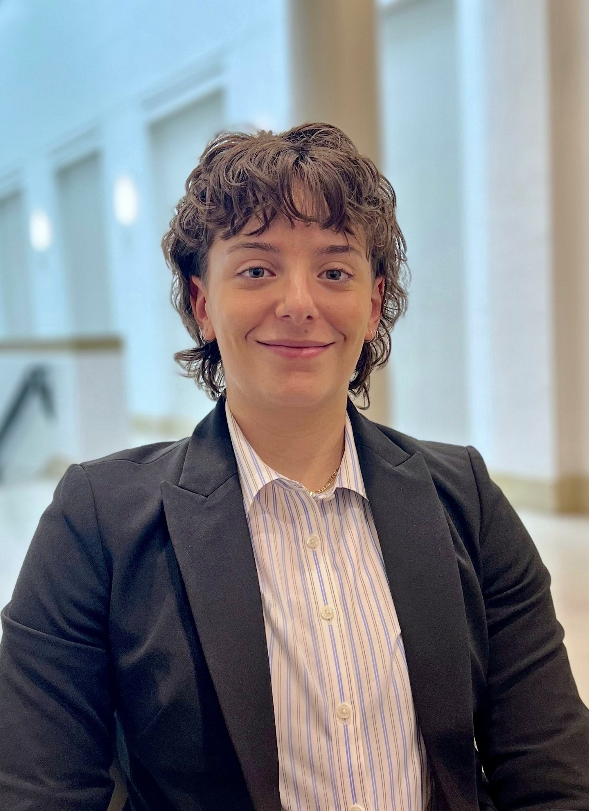

Laura S. DeLuca
I am a fifth-year PhD candidate in English at Carnegie Mellon University. My research examines early modern drama, classical reception, book history, and digital humanities, with particular interests in gender, race, and the transmission of classical antiquity. My dissertation explores representations of ancient queens in early modern literature, examining how these figures shaped competing models of conduct, race, and sexuality on the Renaissance stage.
My work has appeared or is forthcoming in Shakespeare Quarterly, Early Theatre, Journal for Early Modern Cultural Studies, Explorations in Renaissance Culture, Digital Studies / Le champ numérique, and Debates in Digital Humanities.
Ancient Queens in Early Modern Drama
My dissertation, Ancient Queens in Early Modern English Drama, examines representations of Cleopatra, Dido, Mariam, Sophonisba, and Boadicea on the Renaissance stage. It explores how early modern writers adapted ancient histories to negotiate competing ideals of women's conduct and questions of gender, race, sexuality, and sovereignty. Bridging book history and digital humanities, I examine how genre, textual transmission, and print circulation shaped the production and reception of early modern literature.
Publications
No publications listed in this category yet.
Selected Fellowships & Awards
My research and teaching have been supported by fellowships, grants, and collaborative research initiatives across early modern studies and digital humanities.
Research Collaborations
Teaching
My courses invite students to approach literary and cultural artifacts through critical interpretation, historical research, and sustained writing. I have served as instructor of record for courses in early modern literature, queenship, archival interpretation, and first-year writing at Carnegie Mellon University.
Selected Conferences
Service & Leadership
CV & Contact
Download my current academic CV for complete details of my research, publications, teaching, presentations, fellowships, and service.
↓ Download CV (PDF)Email: ldeluca@cmu.edu